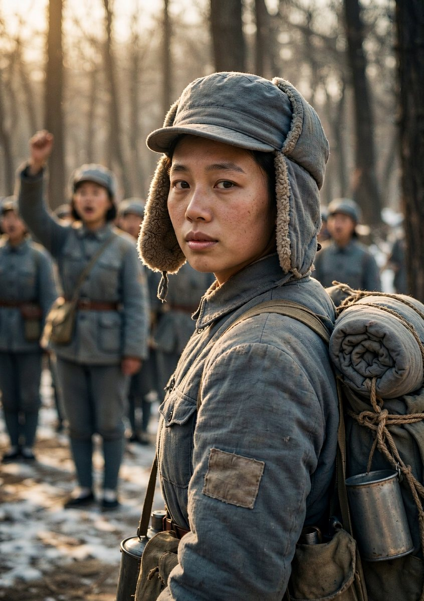
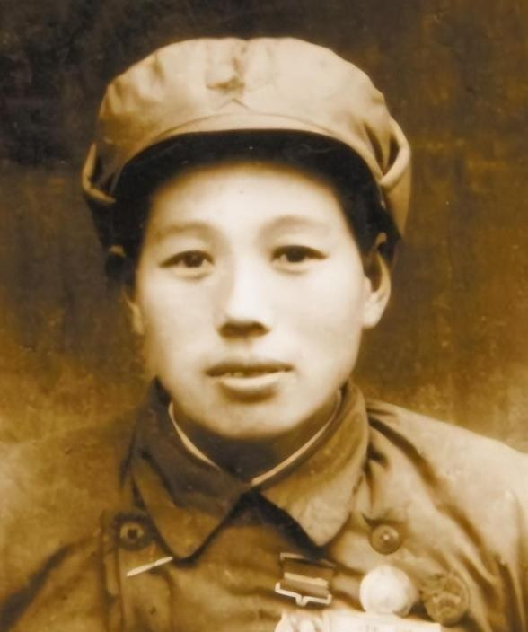
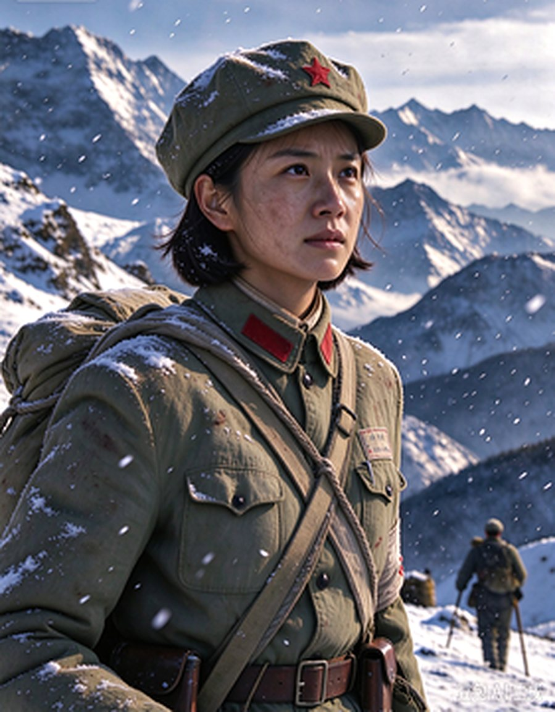
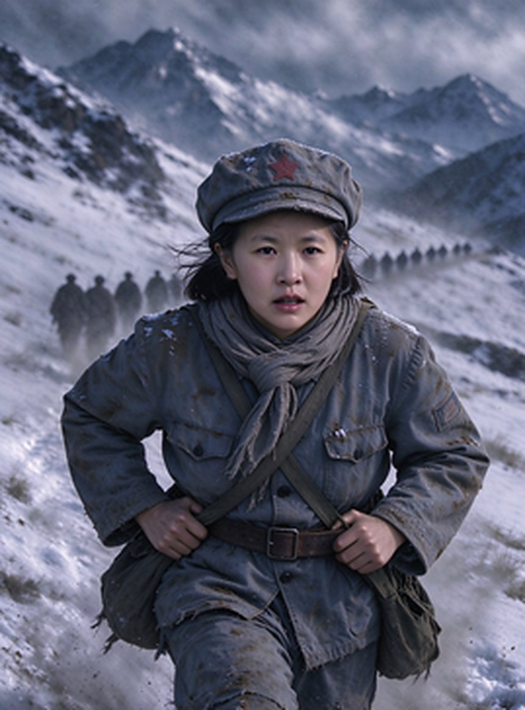
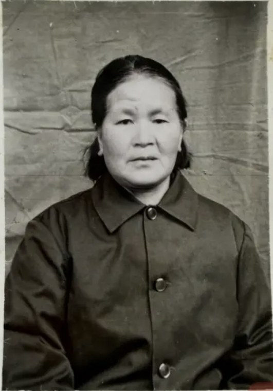
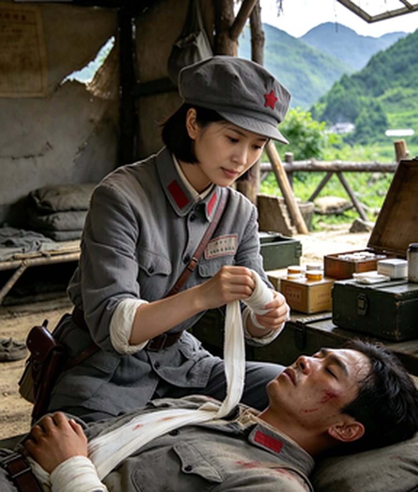
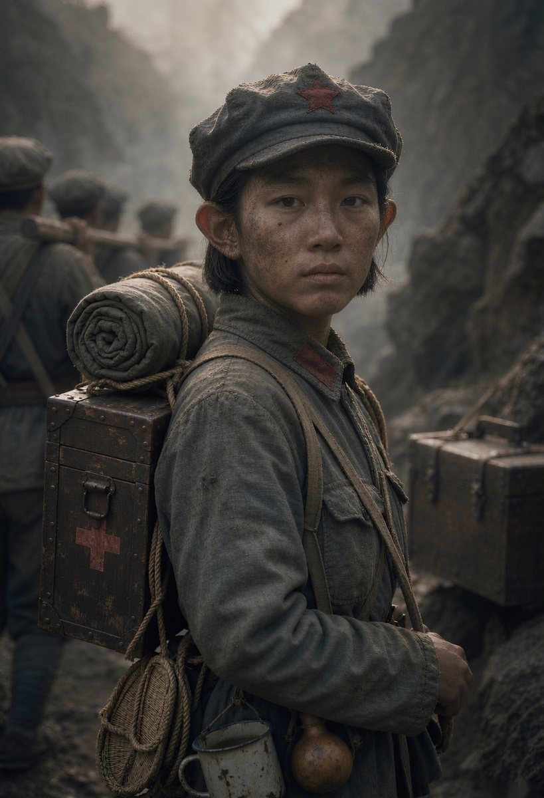
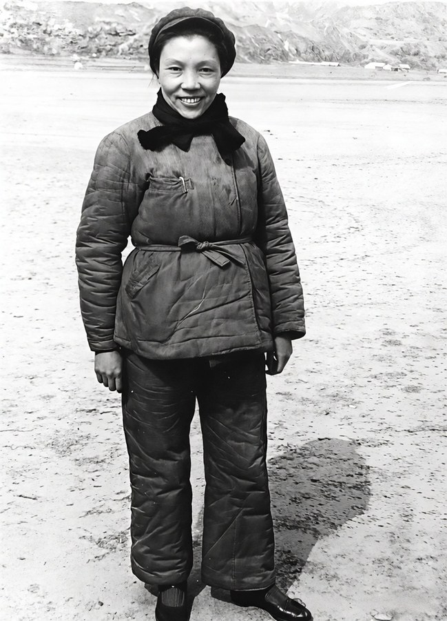

她们的长征
不止二万五千里
中央红军走完长征的女战士，只有三十二人。
这里，写着其中六个名字。
1934年10月，中央红军踏上远征。队伍里有这样一群人——她们背着药箱、抬着担架、唱着歌，走在队伍里，也走在最危险的位置。
历史记住了战役、路线、番号，却很少记住：是谁在队伍最后把掉队的人扶起来，是谁宿营时最后一个躺下，是谁翻过山口时回过头，数了数人。

第一程 · 她把歌唱成了脚步
危拱之
1905 — 1973

缠过足，却有一双“解放脚” · 全程徒步二万五千里
出生在信阳城里一个破落的书香门第。1926年考入黄埔军校武汉分校，1927年4月加入中国共产党。
她缠过足，却有一双“解放脚”——脚放开了，骨头却已经长歪。就是这样一双脚，走完了二万五千里。她是中央红军三十二名全程走完长征的女战士之一。
行军途中，她坚持表演，编唱新《凤阳花鼓》，名扬全军。战士们一听“唱花鼓戏的同志在前面”，脚步都快了起来。
相关物件 · 其一
凤阳花鼓
轻敲花鼓，打开她的行囊有声

第二程 · 她把雪山走成了平地
康克清
1911 — 1992
直属队指导员 · 走完长征全程，三次翻越雪山
江西万安罗塘湾的贫苦渔家出身。队伍翻雪山时，她不是被照顾的对象，而是直属队指导员。
她随红军三大主力行动，走完长征全过程，三次翻越雪山，历时整整两年——比红一方面军其他女红军多走了一年。
后来她回忆长征，只说“就像在野外散步一样”。一句轻描淡写，背后是整整两年的枪林弹雨与雪山草地。
相关物件 · 其二
渔 网
抖开渔网，打开她的行囊有声

第三程 · 她把草根嚼成了命
王全英
1921 — 2026

14岁参军 · 最后一位离世的长征女红军
四川金川的藏族贫苦孤儿。14岁参加红四方面军，任战地卫生员。
1936年在丹巴与部队失散。她独自翻越雪山追赶队伍，靠挖野草充饥，左脚一根脚趾冻掉。此后流落汶川三江，隐姓埋名数十年，1984年才被认定为流落红军。
她一生俭朴，晚年常说“红军是好人，是为穷人服务的”。2026年7月22日辞世，享年105岁。
相关物件 · 其三
野 草
拨开野草，打开她的行囊有声

第四程 · 她先扑向了伤员
贺子珍
1909 — 1984
敌机轰炸中扑向伤员 · 身中十七块弹片
江西永新烟阁乡黄竹岭村人。1935年贵州盘县，敌机突然轰炸。
她没有先找掩体，而是扑在伤员身上掩护。爆炸过后，她身中十七块弹片，脑颅里残留的那一块，伴随了她一生。
醒来后，她先问的是伤员情况，还嘱咐不要把自己受伤的消息告诉毛泽东。这不是电影桥段，是长征路上一位女战士的本能选择。
相关物件 · 其四
子 弹
握住子弹，打开她的行囊有声

第五程 · 她把肩膀借给了担架
李坚真
1907 — 1992
干部休养连指导员 · 被誉为“客家女杰”
广东丰顺人。1926年参加革命，1927年加入中国共产党。
长征途中一次队伍遭袭，抬担架的民夫跑了。干部休养连指导员李坚真和一名战士，抬起担架就跑。敌人在射击，她们一路冲进深沟。放下担架时，肩膀已经磨得红肿。
快到泸定桥时，她把药箱紧紧绑在肩上，扶着铁索，一步一步走过去。
相关物件 · 其五
药 箱
扣开铜扣，打开她的行囊有声
第六程 · 她把队伍拧成了一股绳
蔡 畅
1900 — 1990

长征女红军中年龄最大的一位 · 一路高唱
湖南湘乡（今双峰县）人。她是长征女红军中年龄最大的一位，却常应战士要求高唱《国际歌》《马赛曲》。
遇到周恩来、邓小平、聂荣臻等留法战友时，大家一齐用法语歌唱。康克清把她的歌声和讲述，称为长征中的“精神食粮”。
在最艰苦的行军路上，她用歌声把队伍重新拧成一股绳。
相关物件 · 其六
一页《国际歌》乐谱
唱响国际歌，打开她的行囊有声
终 · 接力
长征没有终点
她们停下的地方，就是我们出发的地方
六件物件，六段路。花鼓响在队伍最前面，渔网背在渔家女儿的肩上，野草是绝境里的口粮，弹片留在她的身体里，药箱压在肩膀最痛的地方，乐谱唱在最沉默的夜里。
她们不是被保护的人。她们是队伍的骨头。
八十多年过去，雪山化成了水，草地变成了田。花鼓走进了课堂，药箱背进了山村，歌声唱进了合唱团。可长征没有结束——每一代人，都有自己的雪山和草地。
轻触，把它们点亮
她们走完了她们的长征。
现在，轮到我们走我们的。
史料据生平记载整理 · 场景与物件图为 AI 复原示意 ·《国际歌》曲：狄盖特